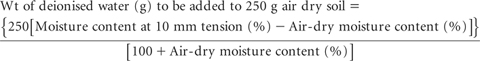
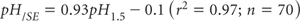
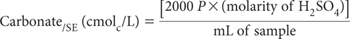
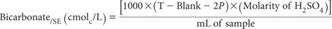
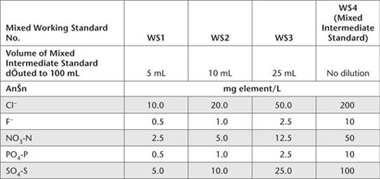
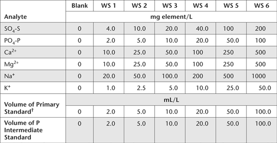
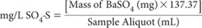

Saturation extracts of soils, obtained from saturated pastes, provide soil testing laboratories with a much used approximation of the soil solution, which is the aqueous liquid phase of the soil and its solutes, consisting of ions dissociated from the surfaces of soil particles and other soluble materials (Adams 1974). Not surprisingly, the composition of soil solutions and SEs influence plant-soil interactions, including soil salinity and soil fertility. This chapter, adapted from Rayment and Higginson (1992), focuses on obtaining SEs and the subsequent measurement of electrical conductivity (EC/SE), pH/SE, and soluble cations and anions in those extracts. The main applications are for research and monitoring, as most routine soil testing laboratories are not equipped to rapidly obtain soil solution extracts at usual field-water contents, even though improved procedures over those originally developed at the US Salinity Laboratory at Riverside, California (US Salinity Laboratory Staff 1954) have been developed (e.g. Gillman 1976; Aitken and Outhwaite 1987).
Two methods for the preparation of saturated pastes have already been described [see Methods 2C1 (mixing) and 2D1 (wetting)]. In the mixing method, the amount of water added to soil is determined using the procedure of Loveday (1972), who used a capillary wetting apparatus to wet up soil at a tension of 1.0 cm, which approximates soil saturation conditions. The wetting method relies on visual examination of soil to the stage when the paste begins to glisten and slide freely from a spatula. Both the mixing method and wetting method can be criticised because they only rarely equate exactly to the true saturation water content in the field (Shaw 1999). Nevertheless, the methods are reasonably reproducible. They also provide sufficient aqueous extract for subsequent analyses, without recourse to expensive extraction equipment (Rhoades 1982).
Four alternatives for removing the SE from saturation pastes are given. These are separately coded, since the method of extraction can influence at least some of the results obtained (Dowling and Howitt 1987). Procedures for the chemical analysis of SE are also provided. See Methods 2C1 and 2D1 for the moisture contents of soils associated with saturation pastes. In addition, Table 14.1 contains summary details of all methods in the chapter, including optional analytical finishes for cations and anions, while background information is provided in preambles to individual methods. For consistency and convenience, units of reporting of cations and anions are provided as the element in mg/L and as cmolc/L.
This method requires very simple apparatus, but does result in contact between SE and the atmosphere. Solution yield can be disappointing particularly for cracking clays, and aeration can change carbonate chemistry (Dowling and Howitt 1987). It should be used only when equipment for extraction by automatic extractor or centrifuge is unavailable or inconvenient.
Table 14.1 Summary detaÕs of method codes, method titles, technologies and expected reliabÕity of tests described in this chapter.
Code |
Technology |
Test method |
Notes |
14A1 |
Physical with simple apparatus. |
Saturation extract – filter suction. |
Sound, low-cost procedure when atmospheric exposure is acceptable. |
14A2 |
Physical with automatic extractor. |
Saturation extract – automatic extractor. |
Sound, semi-automated procedure when atmospheric exposure is acceptable. |
14A3 |
Physical with centrifuge. |
Saturation extract – centrifuge, closed system. |
Good, reliable laboratory procedure, preferred when atmospheric exposure needs to be avoided. |
14A4 |
Saturation extract – centrifuge, Cillman. |
||
14B1 |
Electrode and conductivity meter. |
Electrical conductivity/SE (EC/SE). |
Good laboratory estimate of EC/SE. |
14C1 |
pH electrodes and millivolt meter. |
PH/SE. |
Good laboratory estimate of pH/SE. |
14D1 |
Potentiometrie titration to specified pH values (8.3 & 4.5). |
Bicarbonate/SE and carbonate/SE – Potentiometrie titration. |
Preferred laboratory method for estimate of HC03/SE and C03/SE. |
14D2 |
Titration to specified pH values (8.3 & 4.5) with indicators. |
Bicarbonate/SE and carbonate/SE – indicator method. |
End point detections by indicators are more subjective than those by Method 14D1. |
14E1 |
Potentiometrie titration with Ag/AgCI electrodes. |
Chloride/SE – Potentiometrie titration. |
Classical laboratory method for Cl– in aqueous solutions, but may suffer from operator error. |
14E2a |
IC technology, with chemical suppression. |
Chloride/SE – IC (chemical suppression of eluent conductivity). |
Good estimate of Cl– (plus common cations and most anions), with moderate sensitivity. |
14E2b |
IC technology, single-column with electronic suppression. |
Chloride/SE – IC (single-column with electronic suppression of eluent conductivity). |
Good estimate of Cl– (plus other common anions), with high sensitivity. |
14E3 |
ICPAES at 134.724 nm. |
Chloride/SE – ICPAES finish. |
Good estimates of CI– with few adverse environmental consequences. Requires ability to operate at 1 34.724 nm, which is beyond the capability of many ICPs. |
14F1 |
ICPAES for SO4-S (plus P and cations). |
Sulfate-S/SE – ICPAES (plus P and soluble cations). |
Good estimates of SO4-S (plus P and cations) at low cost and with few adverse environmental consequences. |
Turbidimetric analysis of SO4-S. |
Sulfate-S/SE – turbidimetric. |
Only justified if ICPAES and/or IC instrumentation is unavailable. |
|
14F3 |
Gravimetric analysis of SO4-S. |
Sulfate-S/SE – gravimetric. |
Only justified if ICPAES and/or IC instrumentation is unavailable. |
14F4 |
Method code only. |
Sulfate-S/SE – automated colour. |
Refer to Rayment and Higginson (1992) for details. |
14F5a |
IC technology, with chemical suppression. |
Sulfate-S/SE – IC (chemical suppression of eluent conductivity). |
Good estimate of SO4-S (plus most anions), with moderate sensitivity. |
14F5b |
IC technology, single-column with electronic suppression. |
Sulfate-S/SE – IC (single-column with electronic suppression of eluent conductivity). |
Good estimate of SO4-S (plus most anions), with high sensitivity. |
14G1 |
Fluoride specific ion and reference electrodes and millivolt meter. |
Fluoride/SE – specific ion electrode. |
Reliable method for F/SE if close attention is paid to concentration, pH and ionic strength. |
14G2a |
IC technology, with chemical suppression. |
Fluoride/SE – IC (chemical suppression of eluent conductivity). |
Only suitable for F/SE with special columns and at elevated concentrations. |
14G2b |
IC technology, single-column with electronic suppression. |
Fluoride/SE – IC (single-column with electronic suppression of eluent conductivity). |
Preferred IC methodology for F/SE, due to better analytical sensitivity. |
14H1 |
ICPAES for key nutrient cations. |
Soluble bases/SE (Ca, Mg, K, Na). |
Good estimates of the specified soluble bases/SE, at low cost and with few adverse environmental consequences. |
0.1% Sodium Hexametaphosphate Solution
Dissolve 0.1 g sodium hexametaphosphate flake – mainly (NaPO3)6 – in 100 mL deionised water.
Prepare saturation pastes as indicated in Method 2D1 or by initially calculating from Method 2C1 the weight of deionised water (g) to be added to a known weight (e.g. 250 g) of air-dry soil of <2 mm.

where 250 in the above calculation equates to the 250 g sample weight.
Next weigh 250 g of each soil into a mixing container. With equal precision, weigh and transfer the calculated quantity of CO2-free deionised water to each soil and mix to form a paste of even consistency. There should be no dry aggregates. Cover, stand for 1 h, individually remix each paste to even consistency and allow to stand covered for a further 15 h or overnight and remix.
Prepare a Buchner funnel fitted to a conical filter flask. The apparatus should be arranged to support a collecting tube of borosilicate glass, which should fit loosely around the delivery end of the Buchner funnel.
Moisten a clean Whatman No. 50 filter paper with deionised water when in the Buchner funnel and apply suction to settle the paper. Next, transfer each of the saturated pastes to Buchner funnel/s and apply suction until 2–3 mL from each are extracted. Discard the initial extract, install a clean, dry borosilicate glass collecting tube, then apply suction until air just commences to pass through the filter. Remove the collecting tube plus extract from respective conical filter flasks and seal to prevent evaporation and excessive contact with the atmosphere.
Analyse the SE for electrical conductivity (EC/SE), pH/SE, monovalent bicarbonate ions (HCO3/SE) and divalent carbonate ions (CO3/SE) as quickly as possible following extraction. If necessary, filter through a 0.20 μm Millipore filter (Gillman 1976). Add 1 drop of 0.1% Sodium Hexametaphosphate Solution per 25 mL portions of SE being retained for cation and anion analyses (other than EC/SE, pH/SE, HCO3/SE, CO3/SE and Na/SE) to prevent possible precipitation of calcium carbonate (CaCO3) due to CO2 dissolution. How to undertake these determinations and subsequently to report results are described later in this chapter.
In this method a proprietary automatic extractor (as made or similar to that made by Concept Engineering, Nebraska, USA) is used to obtain the soil SE. Filter paper clears the extract and suction pulls the extract into the collecting syringe.
Some saturated pastes are difficult to extract, mostly due to soil dispersion and puddling. Repeated extraction is possible to obtain sufficient extract for subsequent analyses. Some SE obtained by automatic extraction may require final clearing via high-speed centrifuging or 0.20 μm Millipore filtration.
Follow Method 14A1 to prepare soil saturation pastes.
Figure 14.1 Configuration of apparatus when using an automatic extractor (or similar components) to obtain soil extraction extracts.
Assemble accessory equipment (soil paste extraction cup and syringes – Figure 14.1) on the automatic extractor, as instructed by manufacturer. Alternatively, improvise with similar components.
Transfer soil saturation paste/s to extraction cup/s and extract sample/s overnight. Use the manufacturer’s recommended setting if available.
Next morning, remove extracts from each collecting syringe. If not totally clear, pass through a 0.20 μm Millipore filter prior to preparation for analysis and reporting, as detailed in Method 14A1 and later in this chapter.
Apparatus used in this centrifuge method is that described by Aitken and Outhwaite (1987). Key components are shown in Figure 14.2. The design may be adapted to suit the cup size of any medium-size laboratory centrifuge. It is an advantage to have a refrigerated centrifuge to allow extraction to take place at a constant temperature of ≈23–25°C. In non-refrigerated centrifuges, temperatures in samples at the end of a large batch can reach 50°C (R Shaw, unpublished data), with consequential effects on solubility and ionic speciation. The apparatus has several advantages over other designs for centrifugal extraction of soil saturation pastes. In particular, there is reduced contamination from the atmosphere (Dowling and Howitt 1987).
Prepare saturation pastes as detailed in Method 14A1. These pastes may be prepared directly in the polypropylene sleeve used to retain the saturation paste in the outer cylinder (Figure 14.2).
Figure 14.2 A centrifuge component for obtaining soil solutions and soil SEs.
Use more than one sleeve for soils yielding low volumes of SE. Manufacturer’s instructions should be followed when setting up the centrifuge.
Centrifuge speed is not critical; a speed giving a RCF of ≈900 (see Note 1) is usually sufficient. Time of centrifugation will vary with soil type and centrifuge speed (see Note 2), but 15 min is usual at a RCF of 900 (Gillman 1976).
Following centrifugation, transfer the SE collected in each polypropylene cup to capped plastic (e.g. 40 mL polypropylene) containers. If not totally clear, pass through a 0.20 μm Millipore filter prior to preparation for analysis and reporting, as detailed in Method 14A1 and later in this chapter.
1. Relative centrifugal force (RCF) is the relative gravitational force at the earth’s surface applied to a sample within a centrifuge. This can be calculated from a factor (0.00001118) times the rotational radius (r) in cm, times the square of the rotating speed (N) in revolutions/min, as follows:
RCF = [0.00001118 × r × N2]
2. For a detailed discussion of time and speed of centrifugation, see Gillman (1976).
Centrifuge assembly used in this method is that described by Gillman (1976) (Figure 14.3). This design may be adapted to fit the cup size of any medium size laboratory centrifuge (3–5 L capacity).
Figure 14.3 Centrifuge assembly of Gillman (1976) used to obtain soil SEs.
Prepare SE as detailed in Method 14A1. Transfer aliquot (usually 250 g) of paste to a stainless steel cylinder (Figure 14.3) on top of a Whatman No. 40 filter paper and cover with polyethylene film.
Assemble apparatus in centrifuge cup, balance the load, then centrifuge at a RCF of ≈900 for ≈15 min. Always adhere to the centrifuge manufacturer’s instructions (see Notes 1 and 2 of Method 14A3). After centrifugation, pass any SEs not totally clear through a 0.20 μm Millipore filter, prior to preparation for analysis and reporting, as detailed in Method 14A1 and later in this chapter.
While the EC of a 1:5 soil/water extract (EC1:5 by Method 3A1) uses a convenient soil/extraction ratio for large-throughput soil testing laboratories, it suffers from being much more dilute than occurs naturally. This method for EC/SE, although tedious, better correlates with plant response to soil salinity (Salcon 1997). Several researches have derived regression equations for converting EC1:5 by Method 3A1 to ECSE, with examples given in Table 14.2.
Table 14.2. RelatŠnships for Australian soÕs for predicting EC/SE from measured values of EC1:5 in units of dS/m.
RelatŠnship |
Reference |
6.4 × EC1:5 |
|
6.5 × EC1:5 |
|
6.44 × EC1:5 – 0.102 |
|
6.08 × EC1:5 – 0.937 |
|
6.29 × EC1:5 – 0.27 |
For the direct determination of ECSE, proceed as for Method 3A1, using a suitably sized conductivity cell to match the volume of SE available.
Report EC/SE (dS/m) at 25°C, together with method codes for preparing and extracting the SE: e.g. 2C1/14A3/14B1.
Measurement of pH of SEs has been helped by the ready availability of pH probes of suitable size, and with sufficient ruggedness to resist abrasion from the soil. Lyons et al. (2003) reported a strong linear relationship between pH/SE and pH1:5 (Method 4A1), described by the equation:

Proceed as for Method 4A1, following determination of EC/SE. The SE should receive only slight mechanical stirring during measurement. If stirring is too vigorous atmospheric CO2 can be absorbed, affecting pH/SE values as a consequence of chemical reactions. A small combination electrode in a narrow borosilicate glass vial is preferred; plastic vials may cause irregularities due to electrostatic effects.
Report pH/SE at 25°C, together with method codes for preparing and extracting the SE.
The aliquot (about 5 mL) used for EC/SE and pH/SE can be used for determination of HCO3/SE and CO3/SE by titration with standard sulfuric acid (H2SO4). The aliquot should be at ≈23–25°C.
2.0 M Sulfuric Acid
Prepare by adding 111.1 mL of 18 M H2SO4 to deionised water, cool, mix well and make to 1.0 L.
Standard 0.02 M Sulfuric Acid
Prepare from a standardised solution or dilute 10.0 mL of 2 M H2SO4 with deionised water and make to 1.0 L when cool. Standardise against a known weight (≈0.3 g for titre of ≈40 mL) of sodium tetraborate (Na2B4O7.10H2O) with methyl red as indicator in a similar manner to that described in Method 7A1. Note that:
Methyl Red Indicator
Dissolve 100 mg methyl red (C15H15N3O2] in 60 mL ethyl alcohol (CH3CH2OH) and dilute with deionised water to 100 mL.
Pipette a 5.0 mL portion of the SE, to which no sodium hexametaphosphate has been added, while keeping the pipette tip near the bottom of the flask. Titrate using the standard 0.02 M H2SO4, firstly to pH 8.3 for CO3/SE and then to pH 4.5 for HCO3/SE. Titrate a blank of deionised water in each batch. When conducting the titration (the sample should not be diluted, concentrated or filtered), add the standard acid in increments of ≤0.5 mL, such that a change of <0.2 pH unit occurs per increment. Mix gently/thoroughly after each addition and complete the titration without undue delay. As end point pH values are approached, make smaller additions of acid and be sure that pH equilibrium is reached before adding more titrant. Record mL of titrant added to achieve the required pH values.

where
P = mL of standard 0.02 M H2SO4 required to reach the pH 8.3 end-point.
Report CO3/SE (cmolc/L), or multiply by 30.005 to convert to mg CO3/SE/L. Also record method codes for preparing and extracting the SE.

where
T = total volume (mL) of standard 0.02 M H2SO4 used to reach pH 4.5; and
P = mL of standard 0.02 M H2SO4 to reach pH 8.3.
Report HCO3/SE (cmolc/L), or multiply by 61.017 to convert to mg HCO3/SE/L. Also record method codes for preparing and extracting the SE.
This is an alternative to Method 14D1 when indicators to detect relevant end-points are preferred.
Metacresol Purple Indicator (pH 8.3 Indicator)
Dissolve 100 mg metacresol purple (C21H18O5S) in 100 mL deionised water.
Bromocresol Green Indicator (pH 4.5 Indicator)
Dissolve 100 mg bromocresol green, sodium salt (C21H13O5Br4SNa) in 100 mL deionised water.
Pipette a 5 mL portion of SE into an Erlenmeyer flask, as described for the potentiometric titration procedure (14D1). Add 0.2 mL (5 drops) of each indicator solution (metacresol purple indicator solution for pH 8.3 and bromocresol green indicator solution for pH 4.5) and titrate over a white surface to the persistent colour change/s characteristic of the equivalence point/s. Check colour at the end-points by adding the same amounts of indicator solutions to buffer solutions at the designated pH values. Otherwise, titrate and record mL of titrant added as described for the potentiometric titration procedure.
As for Method 14D1. Report as detailed in Method 14D1.
Analyse an aliquot of SE by potentiometric titration, as outlined in Method 5A1.
Report Cl/SE (cmolc/L), or multiply by 35.453 to convert to mg Cl/SE/L. Also, record method codes for preparing and extracting the SE.
A diluted aliquot of SE is analysed by IC operating with chemical suppression of eluent EC. A small amount of sample is introduced into a stream of eluent and pumped through a column of ion exchange solid phase, where the anions are separated on the basis of their affinity for the active sites of the column packing material. Chloride and other anions such as sulfate (SO42–), fluoride (F-), phosphate (PO43–) and nitrate (NO3–) can be quantified using an EC detector operating in either peak height or peak area mode. The application is only suited to the quantitative analysis of F- if extracts are known to be free (or made to be free) of interference from short-chain organic acids and carbonate. Also, monovalent perchlorate ions (ClO4–) and Br– coelute under the specified conditions (Thorne 2004). For further background information on this analytical technology, refer to Method 5A3a, to Australian Standard AS 3741 (Anon 1990), and to APHA-AWWA-WEF (2005c).
Determination of Cl– concentrations, in conjunction with the other anions mentioned, involves injecting filtered aliquots (<0.45 μm with <0.20 μm membrane filter preferred) of SE into the IC, broadly configured for water analysis. In the Dionex system described, the sample is pumped through three different ion exchange columns and then into a conductivity detector (O’Dell et al. 1984). The first column (pre-column) acts as a guard, protecting the second or separator column from fouling by particulates including OM. The separator column contains a styrene divinylbenzene-based anion exchange resin of low capacity, designed to separate anions based on their affinity for exchange sites on the resin. The third is a suppressor column packed with high-capacity cation exchanger, capable of converting the eluent and separated anions to their corresponding acids. Finally, the separated anions in their acid form are determined quantitatively by their respective retention times, following detection with an EC cell and comparison with known standards (O’Dell et al. 1984; APHA-AWWA-WEF 2005c). The approximate detection limit is 0.1 mg Cl–/L (see Note 1).
Reagent Water
Deionised or distilled water, free of the anions of interest and containing no particles >0.20 μm.
Dissolve 0.2520 g sodium bicarbonate (NaHCO3) in Reagent Water. Separately dissolve 0.2544 g sodium carbonate (Na2CO3) in Reagent Water then combine and make to 1.0 L. This solution contains 0.003 M NaHCO3 and 0.0024 M Na2CO3. As the eluent solution acts as a growth media for microorganisms, it should not be kept for longer than one month. Changing the eluent solution may also change the order of elution of the anions of interest.
Suppressor Regenerating Solution (≈0.0125 M H2 SO4)
Dilute 0.7 mL sulfuric acid (H2SO4; 18 M) in Reagent Water and make to 1.0 L.
Chloride Primary Standard
1 L contains 10 000 mg of Cl
Dissolve 16.485 g sodium chloride (NaCl; previously dried at 110°C for 2 h) in Reagent Water and make to 1.0 L in a volumetric flask. This solution is stable for at least one month when stored at ≈4°C.
Mixed Intermediate Standard
Prepare a Chloride Intermediate Standard (mixed with other anions of interest) by diluting respective Primary Standards as shown in Table 14.3. How to prepare Primary Standards other than Cl– are provided in relevant Methods.
Mixed Working Standards
Prepare by transferring the required amount of Mixed Intermediate Standard to 100 mL volumetric flasks according to Table 14.4. Concentration/s can be increased/varied to suit the particular equipment and column/s. These solutions should be prepared fresh daily if they contain NO3– and/or HPO42–, otherwise prepare weekly.
Ion Chromatograph, etc.
All details are similar to those provided in the corresponding section of Method 5A3a.
Set up the IC in accord with manufacturer’s instructions and as described in Method 5A3a. Equilibrate by pumping eluent solution for ≈15–20 min through all three columns. Allow sufficient time for the system to stabilise, or until a stable baseline is obtained.
Table 14.3. Volumes of specified Primary Standards used to prepare 1.0 L of Mixed Intermediate Standard.
AnŠn |
ConcentratŠn of Primary Standards (mg element/L) |
Volume of Primary Standards (mL) |
AnŠn ConcentratŠn (mg element/L) |
Cl– |
10 000 |
20 |
200 |
F– |
1000 |
10 |
10 |
NO3-N |
1000 |
50 |
50 |
PO4-P |
1000 |
10 |
10 |
SO4-S |
1000 |
100 |
100 |
Table 14.4. Volumes of Mixed Intermediate Standard to prepare 100 mL volumes of Mixed Working Standards (WS) for calibrating the IC for SEs of soÕ.

Retention times for each anion will depend on the instrument. For a Dionex DX 500 IC (for example), retention times for F–, Cl–, NO3-N, PO4-P and SO4-S can be expected to be between 3–4, 4.5–5.5, 8–9, 10.5–11.5 and 13–14 min, respectively.
SE of soils need to be diluted before introduction into the sample entry port to minimise interferences from total dissolved salts. The dilution ratio will depend on the instrument and sample injection volume. Table 14.5 shows suggested dilution ratios for a Dionex DX 500 instrument and for a 50 μL injection volume. Filter diluted extracts as necessary to remove particles >0.20 μm, using polyethersulfone (PES) filters or equivalent.
Analyse the Reagent Water blank and the four Mixed Working Standards by injecting the appropriate sample volume, depending on the instrument (25–75 μL for a Dionex DX 500). Prepare calibration curves for Cl– (and all other anions of interest) by plotting peak height or peak area – from the chromatogram – against the concentrations of the anion calibration solutions. Analyse SE by injecting the same volume as for standards. Record all dilutions, the ion chromatogram, and evaluate peak height or peak area as required for comparison with the relevant calibration curve.
Report Cl–/SE concentrations in cmolc/L, or multiply by 35.453 to convert to mg Cl–/L.
1. For further details on IC analysis by chemical suppression of eluent conductivity, refer to APHA-AWWA-WEF (2005c).
This variant of the IC technology described in 5A3a and in Method 14E2a shares many of the same analytical capabilities, advantages and disadvantages. The technology, however, has higher sensitivity (see APHA-AWWA-WEF 2005d) so requires high-quality reagents. Anions in aqueous extracts within mg/L concentration ranges separate in the order F–, Cl–, NO2–, Br–,–, HPO42–, and SO42–, with individual analyses able to be completed typically within 30 min using only a few mL of SE. No particles passing through the system should exceed 0.45 μm (<0.20 μm preferred), and best separations occur when sample pH values range between 5 and 9. The approximate detection limit is 0.1 mg/L, with an injection volume of 100 μL. Monovalent ClO4– and Br– will coelute under the specified conditions, if present in measurable quantities. Refer to Method 5A3b, Australian Standard AS 3741 (Anon 1990), APHA-AWWA-WEF (2005d) and Thorne (2004) for further details.
Table 14.5. Suggested dÕutŠn ratŠs for a DŠnex DX 500 to minimise interferences from total dissolved salts.
Conductivity Range (dS/m) |
DÕutŠn RatŠ |
5–10 |
1:5 (1+4 with Reagent Water) |
>10–25 |
1:20 (1+19 with Reagent Water) |
>25–50 |
1:50 (1+49 with Reagent Water) |
> 50 |
1:100 (1+99 with Reagent Water) |
Reagent Water
As for Method 14E2a.
Borate/Gluconate Concentrate
As for Method 5A3b.
Eluent Solution [0.011 M borate, 0.0015 M gluconate, and 12% (v/v) acetonitrile].
As for Method 5A3b.
Chloride Primary Standard
1 L contains 10 000 mg of Cl.
Prepare and store as for Method 14E2a.
Mixed Intermediate Standard
Prepare a Chloride Intermediate Standard (mixed with other anions of interest) according to Table 14.3 of Method 14E2a.
Mixed Working Standards
Prepare by transferring the required amount of Mixed Intermediate Standard to 100 mL volumetric flasks according to Table 14.4 of Method 14E2a. Concentration/s can be increased/varied to suite the particular equipment and column/s. These solutions should be prepared fresh daily if they contain NO3– and/or HPO42–; otherwise prepare weekly.
Ion Chromatograph, etc.
All details are similar to those provided in the corresponding section of Method 5A3b.
Set up the IC in accord with manufacturer’s instructions. Specifications typically change over time. Equilibrate the system at constant temperature for approximately 15–20 min or until a stable baseline is obtained. Make other instrumental adjustments in accord with expected Cl– concentrations (and in accord with other anions of interest). Determine the retention time for Cl– (and other anions of interest), guided by Methods 5A3b and 14E2a.
As for Method 14E2a, SE of soils will need to be diluted before introduction into the sample entry port to minimise interferences from total dissolved salts. This dilution ratio will depend on the instrument and sample injection volume. Table 14.5 provides suggested dilution ratios. Filter diluted extracts as necessary to remove particles >0.20 μm, using PES filters or equivalent.
Analyse the Reagent Water blank and the four Mixed Working Standards by injecting the appropriate sample volume, depending on manufacturer’s recommendations. Prepare calibration curves for Cl– (and all other anions of interest) by plotting peak height or peak area – from the chromatogram – against the concentrations of the anion calibration solutions. Analyse SE by injecting the same volume as for standards. Record all dilutions, the ion chromatogram, and evaluate peak height or peak area as required for comparison with the relevant calibration curve.
Report Cl–/SE concentrations with the relevant method codes and units as detailed in Method 14E2a.
Chloride ions in SE of soils, when free of particulates (i.e. no particles >0.45 μm) can be measured by ICPAES if the instrument can operate at a wavelength of 134.724 nm. Spectroflame™ ICP is one that can meet this criterion. Almost always, the SE must be diluted at least to concentrations no greater than those in typical 1:5 soil/water extracts. Dilutions are essential (at least 1:10) when aqueous solution concentrations exceed around 200 mg Cl–/L.
Reagent Water
As for Method 14E2a.
Chloride Primary Standard
1 mL contains 2 mg of Cl.
As for Method 5A2a
Chloride Working Standards
Add 1.0, 2.5, 5.0, 12.5, 25.0, 37.5, 50.0, 75.0, and 100.0 mL of Cl Primary Standard to separate 1.0 L volumetric flasks and dilute to volume with Reagent Water. These solutions contain 2.0, 5.0, 10.0, 25.0, 50.0, 75.0, 100, 150, and 200 mg Cl–/L.
Analyse a filtered (≤0.45 μm pre-washed membrane and preferably ≤0.20 μm) aliquot of the SE and an appropriate range of Cl Working Standards by ICPAES for Cl– at a wavelength of 134.724 nm, as broadly outlined in Method 5A4. Soluble cations and other anions may also be determined simultaneously or sequentially. Dilute SE if necessary and record the dilution ratio, typically 1:10 for SE concentrations >200 mg Cl–/L.
Report Cl–/SE concentrations with the relevant method codes and units as detailed in Method 14E2a.
ICPAES is a proven analytical finish for the simultaneous multi-elemental determination of cations, and anions such as SO42– and HPO42– in aqueous solutions. This method describes reagents and procedures for the determination of SO4-S and the simultaneous determination of PO4-P. It also covers the determination of soluble bases (Ca2+, Mg2+, Na+, K+) in SE of soils.
Reagent Water
As for Method 14E2a.
Sulfur Primary Standard
1 L contains 2000 mg of SO4-S.
Dissolve 4.1214 g ammonium sulfate [(NH4)2SO4; previously dried at 105°C for 4 h] in deionised water and make to 500 mL in a volumetric flask. Add 2 drops of chloroform (CHCl3) to prolong shelf life and store at ≈4°C.
Other Primary Standards (P, Ca, Mg, Na, K)
A certified standard solution of 10 000 mg P/L is recommended as the P Primary Standard, from which a P Intermediate Standard of 1000 mg P/L should be prepared by 1:10 dilution. Also prepare Primary Standards for Ca, Mg, Na and K as described in Method 14H1. Primary Standards containing S and Ca should not be combined, due to the likelihood of precipitation at the specified concentrations.
Mixed Working Standards
See Table 14.6 for guidance on the preparation and elemental concentrations (mg/L) of Mixed Working Standards. Primary Standards are required for S, Ca, Mg, Na and K, while an Intermediate Standard (1000 mg P/L) is used for P. Dispense these solutions using an A grade calibrated micro-burette (10 mL) or 50 mL burette. Each Working Standard and the calibration blank should include 10 mL of 10 M HCl/L (see Note 1).
Table 14.6. Volumes (mL) of Primary and Intermediate Standards to prepare 1.0 L volumes of Mixed Working Standards (WS) for SO4 -S, PO4-P, Ca2+, Mg2+, Na+ and K+, plus resultant elemental concentratŠns (mg/L).

†These volumes apply to all Primary Standards apart from P. Refer to Method 14H1 for detaÕs on the preparatŠn and concentratŠns of Primary Standards for Ca, Mg, Na and K.
Table 14.7. Suggested dÕutŠn ratŠs for SE before running on an ICPAES.
Conductivity range (dS/m) |
DÕutŠn ratŠ |
5–10 |
1:2 (1+1 with Reagent Water) |
>10–25 |
1:5 (1+4 with Reagent Water) |
>25–50 |
1:10 (1+9 with Reagent Water) |
>50 |
1:20 (1+19 with Reagent Water) |
Dilute SE to an EC <2 dS/m (before running on the ICPAES) to reduce total dissolved salts and to give enough sample for analysis and repeats if required. Use Table 14.7 as a guide to dilutions.
Filter (≤0.45 μm pre-washed PES filter or equivalent and preferably ≤0.20 μm) ≈20 mL of diluted SE into a 50 mL polypropylene tube and transfer a suitable volume into an auto-sampler tube for ICPAES analysis. An ICPAES with simultaneous or fast sequential operation is preferred. Set up instrument according to manufacturer’s instructions, and determine concentrations of SO4-S, PO4-P, Ca2+, Mg2+, Na+ and K+ in mg/L or cmolc/L as required. Make due allowance for any significant method blank if applicable.
For a VarianVista Pro™ ICPAES (as an example), the following wavelengths are suggested and the practical quantitation limits shown should be achievable (see Table 14.8).
Report SO4-S (mg/L) in SE with relevant method codes. Divide by 16.03 to convert mg SO4-S/L to cmolcSO4-S/L.
1. Dilute HCl is included to extend the operational life of Mixed Working Standards, especially when prepared in combination with other elements. At the concentration specified, this acid has no effect on nebulisation during analysis by ICPAES.
Table 14.8. Suggested analytical wavelengths and practical quantitatŠn limits that can be expected using a modern ICPAES.
Element |
Wavelength (nm) |
PQL (mg/L) |
SO4-S |
181.97 |
0.30 |
PO4-P |
213.62 |
0.13 |
Ca2+ |
393.37 |
0.09 |
Ca2+ |
430.25 |
0.28 |
Mg2+ |
285.21 |
0.02 |
Na+ |
588.99 |
0.27 |
K+ |
766.5 |
0.60 |
SE of soils containing ≈1.6–13.3 mg SO4-S/L are suited to turbidimetric analysis associated with the quantitative precipitation of barium sulfate [BaSO4; ASTM-Method D 516-07 (2008)]. For extracts with higher concentrations of SO4-S, gravimetric, IC or ICPAES procedures are preferred. Although generally reliable within the specified concentration range, the method can be affected adversely by interferences. Examples of interferences [ASTM-Method D 516-07 (2008)] include:
Where one or more of these interferences are anticipated, the best option (if available) is to choose an alternative method, such as ICPAES or IC.
In this method, SO42– is precipitated as BaSO4, following the addition to SE of barium chloride (BaCl2) in the presence of HCl (Steinbergs 1955). The precipitation of BaSO4 is performed under precise conditions in order to produce suspended crystals of uniform size. The turbidity (or absorbance) of the BaSO4 suspension is then measured and the SO4-S concentration determined turbidimetrically by comparison with known standard solutions.
Conditioning Reagent
Dissolve 75 g sodium chloride (NaCl) in 300 mL deionised water, add 30 mL of 10 M HCl and 100 mL 95% ethanol (CH3CH2OH). Combine with 50 mL glycerol (CH2OH.CHOH.CH2OH) and mix well.
Potassium Sulfate Solution
Dissolve 0.544 g potassium sulfate (K2SO4) and dilute to 1 L with deionised water.
Barium Chloride ‘Seed’ Suspension
Place 23.0 g barium chloride dihydrate (BaCl2.2H2O) in a 150 mL Erlenmeyer flask. Add, in the precise order, 4.0 mL K2SO4 Solution and 46.0 mL of deionised water. Dissolve the BaCl2 crystals by heating and allow to cool. Transfer to a test tube and allow the mixture to stand for 30 min. Pipette (while keeping the end of the pipette about 1 cm from the bottom of the tube and away from the sides) ≈48 mL of the suspension back into the Erlenmeyer flask. Discard the residue in the tube. Next add another 4.0 mL K2SO4 solution, shake for 1 min and allow to stand for 45 min. Transfer to test tube and pipette off the bulk of this suspension in the manner described above. Add a further 4.0 mL of K2SO4 solution, shake for 1 min and allow to stand for 1 h. Pipette off as above and discard the residue in the tube. Dilute the final suspension to 50 mL in a volumetric flask and store away from direct sunlight.
Sulfate-S Primary Standard
1 L contains 300 mg of SO4-S.
Dissolve 1.6306 g potassium sulfate (K2SO4; previously dried at 105°C for 4 h) in deionised water and make to 1.0 L in a volumetric flask. Store in borosilicate glass, preferably in the dark.
Sulfate Working Standards
Pipette 0, 0.5, 2.0, 5.0, 10.0 and 20 mL of SO4-S Primary Standard to separate 100 mL volumetric flasks and dilute to volume with deionised water. These standards contain 0, 1.5, 6.0, 15.0, 30.0 and 60.0 mg SO4-S/L.
Filter the SE (if necessary) through a Whatman No. 42 filter paper and transfer a 5.0 mL aliquot to a 25 mL volumetric flask. Add 2.5 mL of Conditioning Reagent to each sample and make to volume with deionised water. Transfer the solution to a 50 mL Erlenmeyer flask, add 1.0 mL of the Barium Chloride ‘Seed’ Suspension, and shake well. Allow to stand for 1 h. Pour some of the solution into the absorption cell of a spectrophotometer and measure absorbance at 420 nm (see Note 1).
Treat the SO4-S Working Standards and a deionised water blank in the same manner (including volumes) as described above, and construct a calibration curve of absorbance versus concentration of the standards. Estimate the SO4-S concentration in the sample by comparing the absorbance with the calibration curve: take account of any significant method blank.
Report SO4-S/SE (mg/L) with relevant method codes, or divide by 16.03 to convert to cmolcSO4-S/L.
1. To obtain reproducible results using this method, careful attention must be paid to uniform temperature, time and rate of stirring, and time of standing of the SE before measurement. If air temperature in the laboratory is known to fluctuate, use a water bath to maintain temperature to within ± 0.1°C. Note that prolonged mechanical stirring can heat up the aqueous mixture, as the electric motor in the stirrer can release heat.
2. If desired, the measurement of absorbance can be automated. An example is turbidimetric flow-injection analysis, as described by Morais et al. (2001).
In this procedure, BaSO4 is precipitated in an acid medium near the boiling temperature by the addition of BaCl2. After a period of digestion, the precipitate is filtered, washed with water until free of Cl–, ignited or dried, and weighed as BaSO4.
This method requires a relatively high volume of SE (e.g. 50 mL), which may render it unsuitable if the quantity of SE is limited. It is also subject to errors from suspended matter, silica and substances that affect the precipitation of Ba ions (see preamble to Method 14F2 for examples). Accordingly, only use this analytical option when there are plentiful volumes of SE with low mineral contents and inconsequential concentrations of specific ion interferences such soluble silicates. It is preferable to choose an alternative analytical finish (e.g. ICPAES or IC) if SE volumes are limited and/or if significant interferences are anticipated. If soluble silicate concentrations exceed 25 mg Si/L and need to be removed because an alternative analytical finish is unavailable, follow the removal procedure outlined in Note 1.
10% Barium Chloride Solution
Dissolve 100 g barium chloride dihydrate (BaCl2.2H2O) in 1.0 L of distilled water. 1.0 mL of this reagent is capable of precipitating ≈40 mg SO4-S.
Dissolve 0.10 g methyl red sodium salt [C15H14N3O2Na] in deionised water and make to 100 mL.
10 M Hydrochloric Acid (HCl)
Silver Nitrate – Nitric Acid Reagent
Dissolve 8.5 g silver nitrate (AgNO3), add 0.5 mL of 15 M HNO3 and dilute to 500 mL with deionised water.
Select and use aliquots of SE, known to contain no particulate matter >0.20 μm. Filter to specification if necessary. If a high content (≥25 mg/L) of dissolved SiO2 is suspected, then either dilute the SE with deionised water or choose an alternative analytical finish. If dilution is used, record the ratio and modify the final calculation accordingly. If necessary, remove Si interference guided by Note 1.
Transfer 50 mL of the clarified SE into a 250 mL beaker. Adjust the acidity with a drop or two of 10 M HCl to pH 4.5–5.0, using a pH meter or to the orange colour of methyl red indicator. Add ≈1 mL of 10 M HCl, then boil the solution to coagulate colloidal particles and refilter through a Whatman No. 42 filter paper into a 250 mL beaker. Wash the filter paper with warm deionised water containing a drop or two of 10 M HCl. Boil the filtrate again and, while gently stirring, slowly add 5.0 mL of warm BaCl2 Solution until precipitation appears complete. Boil the solution for 5 min and leave to stand overnight (or at least for 2 h).
When cool, filter the solution through a Whatman No. 42 filter paper, and carefully transfer the precipitate from the beaker to the paper with warm deionised water. If any BaSO4 precipitate passes through the paper, refilter until the filtrate is clear. Test the filtrate to ensure complete precipitation of SO42– by adding more BaCl2: if no precipitate forms, discard the filtrate.
Wash the precipitate and the paper with small amounts of warm deionised water and continue doing so until the washings are free of Cl–, as indicated by testing with the AgNO3 – HNO3 Reagent.
Fold the moist filter paper around the precipitate and place in a tared silica crucible. Place the crucible in a furnace and increase the temperature gradually to allow charring of the paper. Do not let the filter paper flame. When charring has completed, ignite at 800°C for 1 h. Cool in a desiccator and weigh. Determine the weight of BaSO4 in mg.

Apply any dilution factors to the above calculation (see Note 2).
Report SO4-S/SE (mg/L) with relevant method codes. Divide by 16.03 to convert mg SO4-S/L to cmolcSO4-S/L.
1. To remove Si interference, evaporate almost to dryness (this is best performed in a platinum dish on a steam bath). Add 1.0 mL 10 M HCl, swirl to completely mix contents, then complete the process of evaporating to near dryness on the waterbath, then transfer to a laboratory oven set at 180°C and continue to evaporate to complete dryness. If there is evidence of the presence of OM at this point, char this material using the flame of a Bunsen burner. Cool, moisten the residue with deionised water and 1.0 mL 10 M HCl, then redry on a steam bath. Cool again then add 2.0 mL 10 M HCl, take up the soluble residue in hot water, and filter. Wash insoluble silica with several small portions of hot deionised water. Combine filtrate and washings but discard any insoluble residue (APHA-AWWA-WEF 2005a).
2. Should it be necessary to express results as SO42– rather than as S, replace 137.37 with 411.56 in the relevant calculation.
This analytical finish, which has the same code number in Rayment and Higginson (1992), is nowadays rarely used, with modern alternatives such as ICPAES and IC preferred. To save space, analytical details are not included.
Sulfate-S and other anions including Cl–, F– (with precautions), NO3-N and PO4-P, are included in the analytical suite described in more detail in Method 14E2a. Alternative IC technology, based on a single-column with electronic suppression of eluent conductivity, is provided as Method 14F5b.
Reagent Water
Deionised or distilled water, free of the anions of interest and containing no particles >0.20 μm.
Sulfate-S Primary Standard
1 L contains 1000 mg of SO4-S.
Prepare from a certified commercial standard solution or dissolve 5.4353 g potassium sulfate (K2SO4; previously dried at 105°C for 4 h) in Reagent Water and make to 1.0 L in a volumetric flask. This solution is stable for at least one month when stored at ≈4°C.
Mixed Working Standards
As for Method 14E2a.
Other Reagents
As for Method 5A3a/14E2a.
Ion Chromatograph, etc.
All details are similar to those provided in the corresponding section of Method 5A3a.
Analyse an aliquot of the SE (no particles >0.20 μm) by IC (chemical suppression of eluent conductivity) as outlined in Method 14E2a.
Report SO4-S/SE concentrations in cmolc/L, with relevant method codes, or multiply by 16.03 to convert to mg SO4-S/L.
In common with Method 14F5a, SO4-S and other anions including Cl–, F–, NO3-N and PO4-P, are included in the analytical suite described in more detail in Method 14E2b. Alternative IC technology, based on chemical suppression of eluent conductivity is provided as Method 14F5a.
As for Method 5A3b and Method 14E2b.
Analyse an aliquot of the SE (no particles >0.20 μm) by IC (single-column with electronic suppression of eluent conductivity) as outlined in Method 14E2b.
Report SO4-S/SE concentrations in cmolc/L with relevant method codes, or multiply by 16.03 to convert to mg SO4-S/L.
In this method, F– concentrations in SE are determined using an ion-selective electrode in conjunction with a calomel reference electrode and a high impedance millivoltmeter (APHA-AWWA-WEF 2005b). The electrode measures F– activity rather than concentration, which is influenced by the total ionic strength of the sample. To compensate for variations in matrix ionic strength, measurements of samples and standards are carried out in the presence of a buffer solution. The buffer solution is necessary because the electrode also responds to OH– under alkaline conditions. In an acid medium, F– will complex with H+ ions to form HF complexes. Raising the pH to 5–6 helps to break F– complexes with Al, Fe and Si. A chelating agent is included in the buffer to preferentially complex polyvalent ions and thereby release any bound F–. Nicholson and Duff (1981) report that addition of tri-ammonium citrate to the buffer gives an improved performance of the ion-selective electrode.
The electrode method is suitable for F– concentrations from ≈0.1 to well over 1.0 mg/L. It is not suited for use when aqueous SE contain >10 000 mg/L of dissolved solids. Make appropriate adjustments to volumes of samples and reagents if the quantities of SE for this test are <25 mL.
TISAB Buffer (Total Ionic Strength Adjustment Buffer)
To ≈500 mL deionised water in a 1.0 L beaker, add 57 mL glacial acetic acid (CH3COOH), 58 g sodium chloride (NaCl) and 4.0 g of 1,2 cyclohexylenediaminetetraacetic acid (CDTA; also known as 1,2 cyclohexylenedinitrilotetra-acetic acid). Stir to dissolve. Place beaker in a cold bath and adjust pH to 5.4 by slowly adding 10% sodium hydroxide (NaOH). Transfer to a 1.0 L volumetric flask and make to volume with deionised water.
Fluoride Primary Standard
1 L contains 100 mg F.
Dissolve 0.2210 g anhydrous sodium fluoride (NaF; previously dried at 110°C for 2 h) in deionised water and make to 1.0 L in a volumetric flask. This solution is stable for at least one month when stored at ≈4°C.
Fluoride Intermediate Standard
1 L contains 10 mg F.
Dilute 100 mL of F Primary Standard with deionised water and make to 1.0 L in a volumetric flask.
Fluoride Working Standards
Pipette 0, 2.5, 5.0 and 10.0 mL of F Intermediate Standard to 100 mL volumetric flasks, add 50 mL of TISAB Buffer to each and dilute to 100 mL with deionised water. These Working Standards contain 0, 0.25, 0.50 and 1.0 mg F/L, respectively.
Fluoride specific ion electrode.
Reference calomel electrode (sleeve type) (see Note 1).
Ion-selective meter or digital pH meter.
Set up the ion-selective meter (or equivalent), equipped with a F specific ion electrode and a sleeve-type reference calomel electrode, and associate millivolt values to F– concentrations across the range of Working Standards. When known to be operating within specifications, pipette 25 mL of each SE into separate 50 mL volumetric flasks and dilute each to volume with the TISAB Buffer. Maintain all solutions at the same temperature, preferably 25°C. Transfer these diluted samples individually to clean 100 mL beakers, immerse the electrodes and begin gentle mechanical stirring. After 3 min, read the millivolt meter. Continue stirring until a stable reading is obtained. Record the final value. Rinse the electrodes, blot dry between readings and continue with each sample in turn. Also measure the undiluted F Working Standards.
Prepare a calibration curve (or regression) relating millivolt values to F– concentrations of the Working Standards. Determine the F– concentrations of the test samples from the calibration curve. Frequently, recheck the values for the Working Standards and recalibrate if necessary. Dilute (with deionised water) a sub-sample of any (original) samples that exceed the range of F Working Standards, add TISAB as previously described, mix well, then reanalyse, adjusting for the dilution employed. Make due allowance for any reagent blank.
Report F–/SE (mg/L) with relevant method codes, or divide by 18.998 to convert to cmolcF/L.
1. A ‘sleeve-type’ reference electrode is preferred to a fibre-tip reference electrode, since the latter are inclined to exhibit erratic behaviour when used with very dilute solutions.
Fluoride and other anions including Cl–, SO4-S, NO3-N and PO4-P, are included in the analytical suite described in more detail in Methods 5A3a and 14E2a. As earlier mentioned (see APHA-AWWA-WEF 2005c), this IC technology is not recommended for F– at very low concentrations and in unknown matrices, the latter for reasons including possible interference from simple organic acids (formic, carbonic, etc) that elute close to F–. Bromates and chlorates may also interfere. There are ‘work-arounds’ using special columns, dilute eluent or gradient elution with NaOH. IC analyses can be completed sequentially within 30 min or less using a few mL of extract. Alternative IC technology, based on a single-column with electronic suppression of eluent conductivity, is provided as Method 14G2b.
Fluoride Primary Standard
1 L contains 1000 mg of F.
Dissolve 2.2101 g anhydrous sodium fluoride (NaF; dry in a desiccator) in Reagent Water and make to 1.0 L in a volumetric flask. This solution is stable for at least one month when stored at ≈4°C.
Double check that with the column/eluent combination selected, F ion ‘peaks’ do not exhibit ‘water dip’; i.e. F– peaks should be clearly visible above the reagent baseline, even at low concentrations. When confirmed, analyse an aliquot of the SE by this IC technology as outlined in Method 14E2a. No particles in the SE should exceed 0.20 μm.
Report F–/SE (mg/L) with relevant method codes, or divide by 18.998 to convert to cmolcF/L.
In common with Method 14G2a, F– and other anions, including Cl–, SO4-S, NO3-N and PO4-P, are included in this analytical suite, described in more detail in Methods 5A3b and 14E2b. The method has high sensitivity (see APHA-AWWA-WEF 2005d) so is suitable for F– determinations, provided high-quality reagents are used. Minimum detectable concentrations of anions are ≈0.02–0.12 mg/L with an injection volume of 100 μL, although detection levels can be reduced by increasing the injection volume. Alternative IC technology, based on chemical suppression of eluent conductivity, is provided as Method 14G2a.
As for Method 5A3b and Method 14E2b.
Fluoride Primary Standard
1 L contains 1000 mg of F.
As for Method 14G2a.
Analyse an aliquot of the SE (no particles >0.20 μm) by IC (single-column with electronic suppression of eluent conductivity) as outlined in Method 14E2b.
Report F–/SE (mg/L) with relevant method codes, or divide by 18.998 to convert to cmolcF/L.
The soluble bases Ca2+, Mg2+, K+ and Na+ can be determined by specific elemental analytical finishes such as EDTA titration for Ca2+ and Mg2+, by FES for Na+ and K+, and sequentially by AAS for all four elements; however, and because the volume of SE can be low (particularly for fine textured soils), the preferred analytical finish and the only one described is based on simultaneous ICPAES. Those who need to use AAS as the analytical finish are referred to APHA-AWWA-WEF (2005e).
The four soluble bases (Ca2+, Mg2+, K+, Na+) are included, along with SO4-S and PO4-P, in the analytical suite of the ICPAES method, mostly described in Method 14F1. For Na+ analysis, use an aliquot of the saturation extract free of any sodium hexametaphosphate, as added in Method 14A.
Reagent Water
As for Method 5A3a.
1 M Hydrochloric Acid (HCl)
1 L contains 5000 mg Ca.
Use commercially available certified solution of 5000 mg Ca/L or weigh 12.486 g of calcium carbonate (CaCO3; previously dried at 110°C to constant weight) and quantitatively transfer into a 1.0 L volumetric flask using Reagent Water. Cautiously and slowly add sufficient 1 M HCl to completely dissolve the CaCO3. Cool and then make to volume with Reagent Water.
Magnesium Primary Standard
1 L contains 5000 mg Mg.
Use commercially available certified solution of 5000 mg Mg/L or weigh 8.2915 g of magnesium oxide (MgO; previously heated in a muffle furnace at 600 to 700°C), then quantitatively transfer into a 1.0 L volumetric flask using Reagent Water. Cautiously and slowly add sufficient 1 M HCl to completely dissolve the MgO. Cool and then make to volume with Reagent Water.
Potassium Primary Standard
1 L contains 500 mg K.
Dissolve 0.9534 g potassium chloride (KCl; previously dried at 110°C for 2 h) in Reagent Water in a 1.0 L volumetric flask and make to volume. Store in a sealed plastic bottle.
Sodium Primary Standard
1 L contains 10 000 mg Na.
Dissolve 25.421 g sodium chloride (NaCl; previously dried at 110°C for 2 h) in Reagent Water in a 1.0 L volumetric flask and make to volume. Store in a sealed plastic bottle.
Mixed Working Standards for Ca, Mg, K and Na
Refer to Table 14.6 of Method 14F1.
Analyse an aliquot of the SE by ICPAES as outlined in Method 14F1, noting that there should be no sodium hexametaphosphate in the extract used for Na+.
Report cation (Ca2+, Mg2+, K+ and Na+) concentrations in SE in mg/L with relevant method codes. Divide mg/L of Ca2+, Mg2+, K+ and Na+ by 20.04, 12.15, 39.1 and 22.99, respectively, to convert each to cmolc/L.
Adams F (1974) Soil solution. In The Plant Root and its Environment. (Ed EW Carlson) pp. 441–481. University of Virginia Press, Charlottesville, VA.
Aitken RL and Outhwaite RJ (1987) A modified centrifuge apparatus for extracting soil solution. Communications in Soil Science and Plant Analysis 18, 1041–1047.
Anon (1990) Recommended practice for chemical analysis by ion chromatography. Australian Standard AS 3741 – 1990. Standards Australia, Sydney.
APHA-AWWA-WEF (2005a) Method 4500–SO42– C. Gravimetric method with ignition of residue. In Standard Methods for the Examination of Water and Wastewater (Centennial Edition). 21st Ed. American Public Health Association, Washington, DC.
APHA-AWWA-WEF (2005b) Method 4500–F– C. Ion-selective electrode method. In Standard Methods for the Examination of Water and Wastewater (Centennial Edition). 21st Ed. American Public Health Association, Washington, DC.
APHA-AWWA-WEF (2005c) Method 4110 B. Ion chromatography with chemical suppression of eluent conductivity. In Standard Methods for the Examination of Water and Wastewater (Centennial Edition). 21st Ed. American Public Health Association, Washington, DC.
APHA-AWWA-WEF (2005d) Method 4110 C. Single-column ion chromatography with direct conductivity detection. In Standard Methods for the Examination of Water and Wastewater (Centennial Edition). 21st Ed. American Public Health Association, Washington, DC.
APHA-AWWA-WPF (2005e) Method Part 3111 B. Direct air-acetylene flame method. In Standard Methods for the Examination of Water and Wastewater (Centennial Edition). 21st Ed. American Public Health Association, Washington, DC.
ASTM-Method D 516–07 (2008) Standard test method for sulfate ion in water. In Annual Book of ASTM Standards, Section 11, Water and Environmental Technology. Vol 11.01 Water (1). ASTM International, West Conshohocken, Philadelphia, USA.
Dowling AJ and Howitt CJ (1987) Effects of extraction technique on concentrations of soluble salts in soil saturation extracts. Australian Journal of Soil Research 25, 137–144.
Gillman GP (1976) A centrifuge method for obtaining soil solution. Division of Soils, Divisional Report No. 16, CSIRO, Australia.
Loveday J (1972) Moisture content of soils for making saturation extracts and the effect of grinding. Division of Soils Technical Paper No. 12, CSIRO Australia.
Loveday J, Beatty HJ and Norris JM (1972) Comparison of chemical methods for evaluating irrigation soils. Division of Soils Technical Paper No. 14, CSIRO Australia.
Lyons DJ, Grant I and Yousaf D (2003) Modern instrumentation renews interest in saturated soil paste. Proceedings 9th PURSL National Conference, 29 Sept.–2 Oct 2003. Yeppoon, Queensland.
Morais IPA, Rangel AOSS and Souto MRS (2001) Determination of sulfate in natural and residual waters by turbidimetric flow-injection analysis. Journal of AOAC International 84, 59–64.
Murray GSC (1980) The relationship between salinity – sodicity parameters of various extracts of soils from irrigation areas in Queensland. Research Project Report, Department of Agriculture, University of Queensland., Brisbane.
Nicholson K and Duff EJ (1981) Fluoride determination in water: an optimum buffer system for use with the fluoride selective electrode. Analytical Letters Part A: Chemical Analysis 14, 887–912.
O’Dell JW, Pfaff JD, Gales ME and McKee GD (1984) Test Method. The Determination of Inorganic Anions in Water by Ion Chromatography – Method 300.0. US Environmental Protection Agency, Cincinnati, OH.
Rayment GE and Higginson FR (1992) Australian Laboratory Handbook of Soil and Water Chemical Methods. Inkata Press, Port Melbourne.
Rhoades J.D. (1982) Soluble salts. In Methods of Soil Analysis. Part 2 – Chemical and Microbiological Properties, 2nd Edn. (Ed AL Page) pp. 167–179. Agronomy No. 9. American Society of Agronomy Inc. and Soil Science Society of America Inc., Madison, Wisconsin, USA.
Salcon (1997) Salinity Management Handbook. Queensland Department of Natural Resources, Brisbane.
Shaw RJ (1981) The use of earth resistance measurements as a rapid method of salinity appraisal. In Proceedings of Salinity and Water Quality Symposium. (Eds AJ Rixon and RJ Smith) pp. 93–112. Darling Downs Institute of Advanced Education, Toowoomba, 1980.
Shaw RJ (1999) Soil salinity – electrical conductivity and chloride. In Soil Analysis: An Interpretation Manual. (Eds KI Peverill, LA Sparrow and DJ Reuter) pp. 129–145. CSIRO Publishing Melbourne.
Steinbergs A (1955) A method for the determination of total sulfur in soils. Analyst 80, 457–461.
Talsma T (1968) Soil Salinity, Part 111. In Environmental Studies of the Coleambally Irrigation Area and Surrounding Districts. Bulletin No. 2. Land Use Series. pp. 35–48. Water Conservation and Irrigation Commission, New South Wales, Australia.
Thorne PG (2004) Field screening method for perchlorate in water and soil. US Army Corps of Engineers, Engineer Research and Development Center, Cold Regions Research and Engineering Laboratory. ERDC/CRREL TR–04–8.
US Salinity Laboratory Staff (1954) Diagnosis and Improvement of Saline and Alkali Soils. (Ed LA Richards) US Department of Agriculture Handbook No. 60.